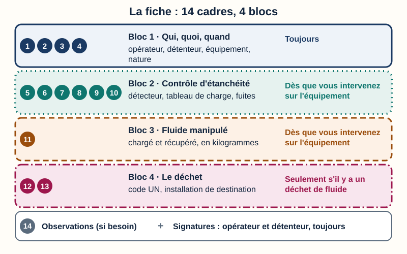
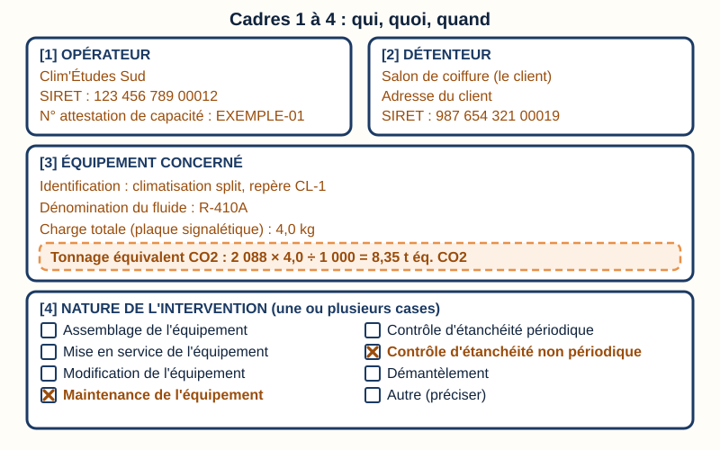
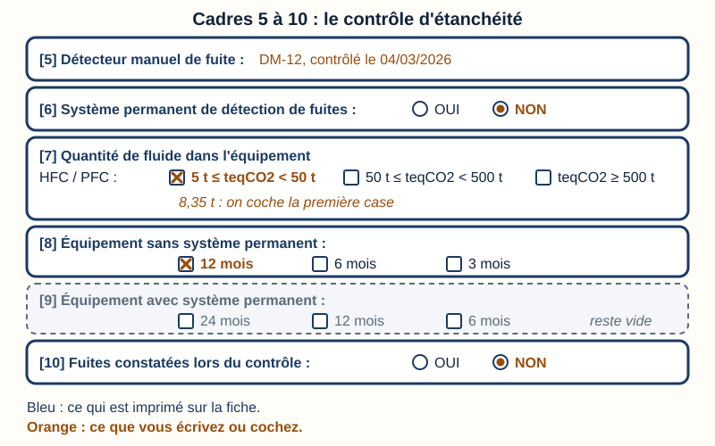
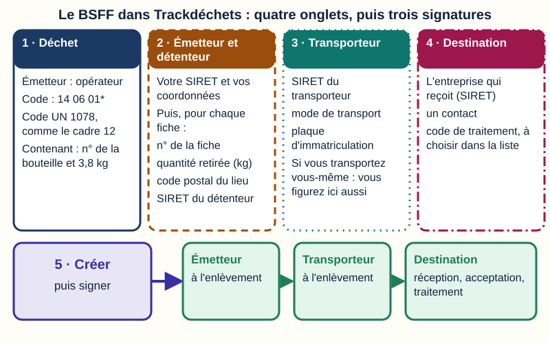
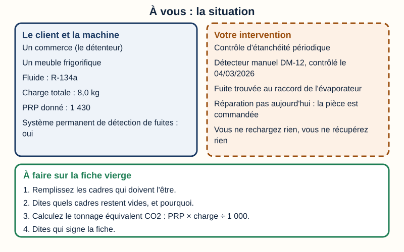

Remplir la fiche d'intervention et le bordereau des déchets
Mini-station commentée · 8 écrans et 4 questions · environ 15 minutes · un exemple résolu, puis une situation à remplir
Objectif
À la fin de la station, vous savez dire quand on remplit la fiche d'intervention (le cerfa 15497) et quand on fait un bordereau de déchets (le BSFF dans Trackdéchets). Vous remplissez, case par case, un exemple résolu, puis vous remplissez seul(e) une situation. Vous savez aussi où vous entraîner : le logiciel inerWeb Fluide, en démonstration, sur des données fictives.
Sert notamment pour
TP TECVC, REAC TP-00133 : hors REAC (culture professionnelle du technicien et du chargé d'affaires)
Attestation d'aptitude 2025 : codes 1.00, 4.09, 5.07 et 5.08
CAP IFCA : compétences C1.1 « Compléter, transmettre » et C1.3 « Rendre compte » · tâches T1 « Renseigner et transmettre des documents de suivi d'intervention » et T2 « Compléter les documents de traçabilité des fluides frigorigènes »
Bac Pro MFER (2028) : savoirs S1.4 « les procédures administratives » et S8.2 « les outils de la communication écrite et numérique » · tâche A3T4 « Renseigner les documents techniques et réglementaires »
Chaque écran peut être expliqué à voix haute : le bouton « Écouter » commente ce que vous voyez. Rien n'est dit qui ne soit aussi écrit.
1 / 12
Écran 1 sur 8
Deux papiers, deux moments
Quand vous intervenez sur un équipement avec du fluide frigorigène, deux papiers peuvent vous attendre.
La fiche d'intervention (le cerfa 15497) : vous la remplissez à chaque intervention qui manipule le fluide (article R. 543-82 du Code de l'environnement). Vous êtes l'opérateur : c'est vous qui l'établissez.
Le bordereau de suivi des déchets de fluides frigorigènes (le BSFF) : on le fait seulement si du fluide devient un déchet, c'est-à-dire s'il part en bouteille de récupération vers le traitement. Il se fait sur internet, dans Trackdéchets.
Deux mots à retenir. L'opérateur est l'entreprise qui intervient. Le détenteur est la personne qui fait fonctionner l'équipement, souvent le client.
La fiche n'est pas dans Trackdéchets : elle reste sur papier ou en version électronique (article R. 543-83). Mais ses informations sont ensuite reportées dans le bordereau (écran 6).

La fiche, toujours. Le bordereau, seulement s'il y a un déchet.
Écran 2 sur 8
La fiche : 14 cadres, 4 blocs
Le cerfa 15497 compte 14 cadres numérotés. Pour ne pas vous perdre, regroupez-les en quatre blocs.
Bloc 1, cadres 1 à 4 : l'opérateur, le détenteur, l'équipement, la nature de l'intervention. Toujours remplis, avec la signature.
Bloc 2, cadres 5 à 10 : le contrôle d'étanchéité (détecteur de fuite, tableau de charge, fuites trouvées).
Bloc 3, cadre 11 : le fluide chargé et le fluide récupéré, en kilogrammes.
Bloc 4, cadres 12 et 13 : le déchet. Seulement s'il y a un déchet de fluide.
Le cadre 14 reçoit vos observations. Les blocs 2 et 3 se remplissent dès que vous avez travaillé sur l'équipement (notice officielle du cerfa 15497*04).
Chaque fiche se conserve 5 ans au moins, chez vous et chez le client (article R. 543-82).

Quatorze cadres, quatre blocs : chaque bloc dit quand on le remplit.
Écran 3 sur 8
Exemple résolu (1/3) : les cadres 1 à 4
La situation de l'exemple (fictive). Le compresseur de la climatisation d'un salon de coiffure est grillé. Votre entreprise le remplace. Le fluide est du R-410A. La plaque de l'appareil indique 4,0 kg de charge. Le fluide récupéré est pollué : on ne le remet pas dans la machine.
Cadre 1, l'opérateur : votre entreprise, son SIRET (numéro d'identification) et son numéro d'attestation de capacité.
Cadre 2, le détenteur : le client, son adresse et son SIRET.
Cadre 3, l'équipement : le fluide, la charge lue sur la plaque signalétique, et le tonnage équivalent CO2. Le PRP (potentiel de réchauffement planétaire) mesure l'effet de serre du fluide : celui du R-410A est 2 088. Donc 2 088 × 4,0 ÷ 1 000 = 8,35 t éq. CO2.
Cadre 4, la nature : cochez une ou plusieurs cases. Ici : « Maintenance » et « Contrôle d'étanchéité non périodique », parce que le circuit a été ouvert.
tonnage = PRP × charge (kg) ÷ 1 000

En orange, ce que vous écrivez ou cochez ; en bleu, ce qui est imprimé.
Écran 4 sur 8
Exemple résolu (2/3) : les cadres 5 à 10
Cadre 5, détecteur manuel de fuite : son repère (numéro de série) et la date de son dernier contrôle.
Cadre 6, système permanent de détection de fuites : OUI ou NON. Ici : NON.
Cadre 7, quantité de fluide : le tableau est imprimé sur la fiche. Pour un HFC, on cherche son tonnage : 8,35 t est entre 5 t et 50 t, donc on coche la première case.
Cadres 8 et 9, le contrôle périodique : sans système permanent, on coche le cadre 8 (ici 12 mois) ; avec un système permanent, le cadre 9. L'autre reste vide.
Cochez OUI, écrivez où est la fuite, puis cochez « Réalisée » ou « À faire » pour la réparation. On ne recharge jamais un équipement qui fuit (article R. 543-89). Un contrôle est attesté par une marque de contrôle posée sur l'équipement ; si la réparation ne peut pas se faire tout de suite, on pose une marque de défaut d'étanchéité (article R. 543-79-1).

Le tableau est imprimé : vous cochez la case qui correspond à votre tonnage.
Écran 5 sur 8
Exemple résolu (3/3) : les cadres 11 à 14
Cadre 11, chargé : le total (A + B + C). Ici 4,0 kg de fluide vierge (A). B (fluide récupéré puis remis) et C (fluide régénéré) restent vides.
Cadre 11, récupéré : le total (D + E), reporté depuis la pesée de la bouteille, jamais estimé. Ici 3,8 kg, tous « destinés au traitement » (D). E (fluide gardé pour être remis) reste vide. On écrit aussi le numéro de la bouteille, et le numéro du bordereau quand Trackdéchets l'a donné.
Cadre 12, code UN : c'est le numéro de transport du déchet. Le formulaire imprime deux lignes : fluides non inflammables (UN 1078, code déchet 14 06 01*) et fluides inflammables (UN 3161, code déchet 16 05 04*). Cochez celle qui correspond ; pour un autre fluide, lisez le code sur l'étiquette de la bouteille. Ici : UN 1078.
Cadre 13, installation de destination : nom, SIRET et adresse de l'installation qui reçoit le déchet.
Cadre 14, observations : une phrase utile.
Signatures : la date, l'opérateur, et le détenteur (8,35 t, c'est plus de 5 t). Le détenteur garde l'original.
À retenir
Si le fluide est remis dans la même machine, il n'y a pas de déchet : on laisse vides D et les cadres 12 et 13. Un fluide récupéré puis remis pendant la même opération se compte à la fois en B et en E.

Quatre kilos entrent, trois kilos huit sortent : chaque chiffre vient de la balance.
Écran 6 sur 8
Le bordereau (BSFF) dans Trackdéchets, case par case
Le bordereau se crée sur le site Trackdéchets (tous les acteurs doivent y avoir un compte). Vous reprenez les informations de la fiche : quatre onglets, puis « Créer ».
Déchet : émetteur « opérateur » (vous collectez chez votre client, avec une fiche d'intervention) ; code déchet 14 06 01* ; code UN, le même qu'au cadre 12 (UN 1078 ; Trackdéchets ne le devine pas) ; la bouteille et sa quantité (3,8 kg).
Émetteur et détenteur : votre SIRET et vos coordonnées ; puis, pour chaque fiche, le numéro de la fiche (celui écrit en haut à gauche du cerfa, « Fiche N° »), la quantité retirée en kg, le code postal du lieu, le SIRET et les coordonnées du détenteur.
Transporteur : son SIRET, le mode de transport, la plaque d'immatriculation. Si vous transportez vous-même, vous figurez aussi ici.
Destination : l'entreprise qui reçoit (cherchée par son SIRET), un contact, le code de traitement choisi dans la liste.
Puis les signatures électroniques se suivent : l'émetteur, le transporteur, l'installation de destination (réception, acceptation, traitement). Reportez ensuite le numéro du bordereau au cadre 11 de la fiche.

Les mêmes informations que la fiche, reportées dans quatre onglets.
Écran 7 sur 8
À vous : une situation à remplir
La situation. Dans un commerce, vous faites le contrôle d'étanchéité périodique d'un meuble frigorifique : fluide R-134a (PRP donné : 1 430), charge totale 8,0 kg, avec un système permanent de détection de fuites. Avec votre détecteur manuel DM-12 (dernier contrôle le 04/03/2026), vous trouvez une fuite au raccord de l'évaporateur. La pièce est commandée : vous ne réparez pas aujourd'hui. Vous ne rechargez rien et ne récupérez rien.
Votre travail, sur papier. Prenez une fiche vierge : le formulaire cerfa 15497*04 se télécharge sur service-public.gouv.fr. Puis :
remplissez les cadres qui doivent l'être ;
dites quels cadres restent vides, et pourquoi ;
calculez le tonnage équivalent CO2 ;
dites qui signe la fiche.
Pour vous aider, relisez les écrans 3 à 5. Le corrigé est à l'écran suivant : remplissez d'abord.

Les données sont sur l'image ; la fiche se remplit sur papier.
Écran 8 sur 8
Le corrigé, et le logiciel pour s'entraîner
Le corrigé de la situation.
Cadres 1 et 2 : votre entreprise et le commerce. Cadre 3 : R-134a, 8,0 kg ; 1 430 × 8,0 ÷ 1 000 = 11,44 t éq. CO2. Cadre 4 : contrôle d'étanchéité périodique.
Cadre 5 : DM-12, 04/03/2026. Cadre 6 : OUI. Cadre 7 : première case (5 t à 50 t). Cadre 8 : vide. Cadre 9 : 24 mois.
Cadre 10 : OUI ; localisation : raccord de l'évaporateur ; réparation : « À faire ».
Cadres 11, 12 et 13 : vides (rien chargé, rien récupéré, pas de déchet : pas de bordereau). Cadre 14 : fuite à réparer, pièce commandée, pas de recharge.
Signatures : l'opérateur et le détenteur (11,44 t, c'est plus de 5 t).
Pour vous entraîner encore : inerWeb Fluide, démonstration en ligne. Aucun compte : les données sont fictives, rien ne sort de votre navigateur, et le repère « DÉMO / FORMATION » reste affiché.
Si une visite guidée s'ouvre, choisissez « L'essentiel » (5 minutes) : le tableau de bord, une fiche d'intervention faite avec l'assistant, son CERFA.
Bouton Nouveau mouvement : l'assistant en 6 étapes (Type, Machine, Bouteille, Pesées, Contrôle, Signature).
Menu Mouvements, bouton Visualiser CERFA : la fiche est remplie à votre place. Comparez avec la vôtre.
Attention
Le logiciel ne fait pas le bordereau BSFF. Son menu « Déchets / remise en filière » tient un suivi interne qui ne le remplace pas : le vrai bordereau se fait dans Trackdéchets. Et une fiche sortie de la démonstration porte le filigrane « FORMATION » : elle ne vaut pas une vraie fiche.

Le logiciel remplit la fiche ; le bordereau, lui, se fait dans Trackdéchets.
Question 1 sur 4
Vous remplacez un compresseur grillé. Tout le fluide récupéré part au traitement. Quels papiers faut-il ?
Rappel de l'écran 1 — la fiche toujours, le bordereau si déchet.
Question 2 sur 4
Un équipement contient 3,6 kg de R-134a (PRP donné : 1 430). Quel est son tonnage et qui signe la fiche ?